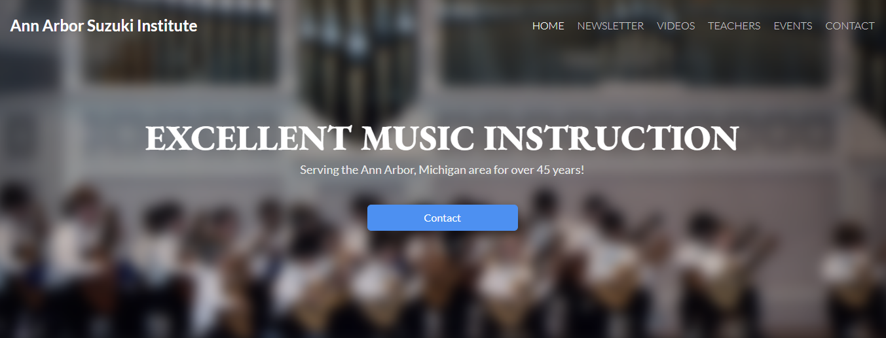

Projects and Experiences
Asteroid Game

Game project done in EECS 493 that involved a user controlling an asteroid trying to avoid asteroids from hitting them
Languages Used: HTML, C++, JS(Jquery)
Completed Oct 9th 2022
Asteroid Game
Description:
Using HTML, CSS, JS(Jquery), built a simple Asteroid Aversion game that prioritized surviving as long as possible
Time Frame:
Completed: October 9th 2022
Tyler Technologies Internship
Worked on a web application called Tyler Cashiering creating new enhancements utilizing an Agile Methodology.
Languages used: HTML, CSS, JS(Angular), .NET Core C#
May - August 2022
Tyler Technologies Internship
Description:
Worked with a small team of interns to develop enhancements on a website called Tyler Cashiering, which local governments around the country used to conduct financial matters. Followed a Agile Methodology and SCRUM roles to structure development.
Time Frame:
May - August 2022
Artist Search
Utilizing a public Itunes API, created a search application that displayed a variety of artist tracks
Languages Used: HTML, CSS, JS(Vue)
Completed Nov 20th 2022
Artist Search
Description:
Using HTML, CSS, JS(Vue), built a artist Search website utilizing a public Itunes API to display certain track information upon user input.
Time Frame:
Completed November 20th 2022
Insta485

Created an Instagram clone in both server-side and client-side manners and deployed final site onto AWS
Languages Used: HTML,CSS, Python, React, SQL
Completed Oct 16th 2022
Insta485
Description:
Developed an instagram clone in both server-side, using Python Flask library and client-side manners, using React. Deployed final site onto AWS EC2 instance.
Time Frame:
Completed October 16th 2022
Bank of America Internship

Joining team of Full Stack Developers in Charlotte, NC. Looking to learning alot.
Starting June 2023
Bank of America Internship
Description:
Joining team of Full Stack Developers in Charlotte, NC. Still awaiting further details regarding project information.
Time Frame:
Start Date: June 2023
Ann Arbor Suzuki Institute
Custom Website made with Void Tech Consulting for local music tutoring service
Languages Used: HTML, CSS, WordPress, PHP
Completed April 2021
Ann Arbor Suzuki Institute
Description:
Custom website made with Void Tech Consulting for local music tutoring service. Utilized Wordpress, PHP to allow for customer access and HTMl and CSS to follow a Figma.
Time Frame:
Completed April 2021
Office Hours Queue

Small mock office hours queue program using Linked Lists, first experience of parsing JSON files
Languages Used: C++
Completed Mar 2021
Office Hours Queue EECS 280
Description:
Built a mock office hours queue program using Linked Lists alongside a mock API and GUI.
Time Frame:
Completed: March 2021
Map Reduce

Single Machine, multi-threaded server that executes user-submitted Map Reduce Jobs.
Languages Used: Python
Completed Nov 15th 2022
Map Reduce EECS 485
Description:
Single machine, multi-threaded server that executes user-submitted Map Reduce jobs. Built using Python.
Time Frame:
Completed: October 9th 2022
Ask485

Scalable search engine similar to Google using a mock Wikipedia database
Languages Used: HTML, CSS, Python, SQL
Completed Dec 6th 2022
Ask485 EECS 427
Description:
Scalable search engine similar to Google using a mock Wikipedia database. Allowed user to input a query where we calculated a inverted index and ranked documents to display accurate results.
Time Frame:
Completed: December 6th 2022